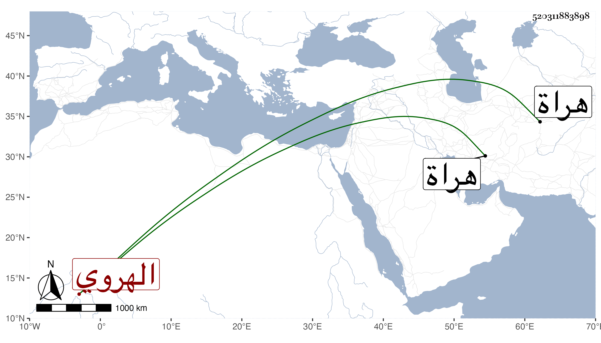

0902Sakhawi.DawLamic.ITO20230111-ara1.EIS1600.520311883898
Biography ID: 520311883898
1198
يوسف بن عبد الله الضياء بن الجمال الهروي ويعرف ببا يوسف . لقيه الطاووسي في سنة اثنتين وعشرين وثمانمائة بمنزله في ظاهر هراة وذكر له أنه زاد سنه على ثلثمائة سنة بسبع سنين واستظهر الطاووسي لذلك بأن عدة من شيوخ بلده قالوا نحن رأيناه من طفوليتنا على هيئته الآن وأخبرنا آباؤنا بمثل ذلك وحينئذ قرأ عليه الطاووسي شيئا بالإجازة العامة والله أعلم .
